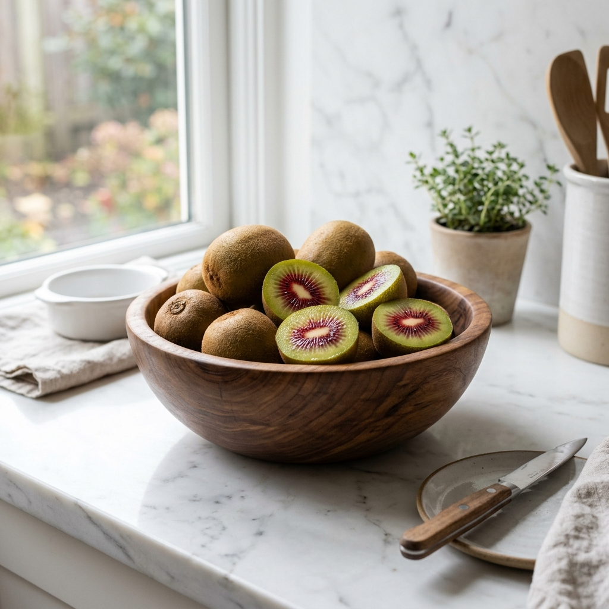
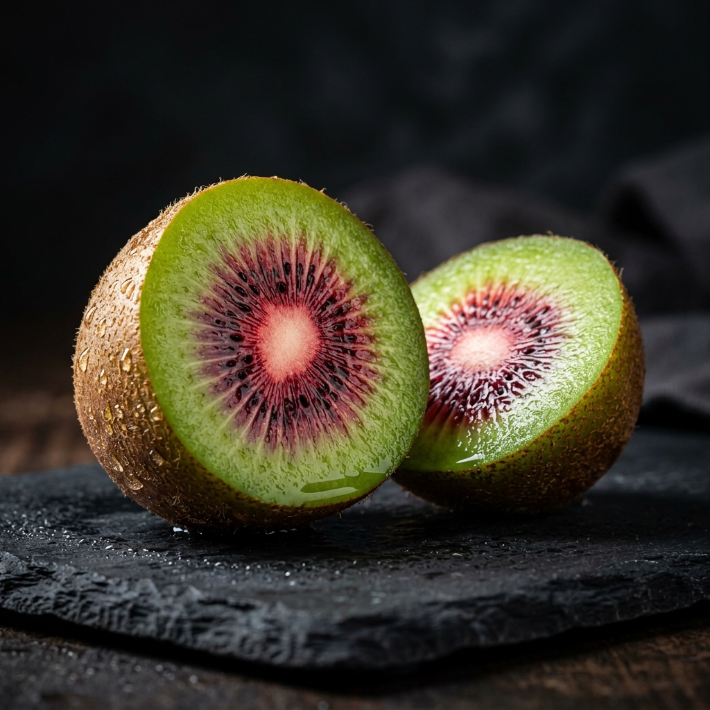

당신의 일상에
빛나는 가치를
루비 키위는 단순한 과일이 아닙니다. 특별한 날의 디저트, 소중한 사람을 위한 선물, 그리고 당신의 건강한 아침을 위한 최고의 선택입니다.
뉴질랜드의 청정 자연에서 건너온 이 붉은 보석은 당신의 식탁을 더욱 품격 있게 만들어줄 것입니다.
지금 주문하기
안토시아닌이 풍부한 빨간 중심부는 시각적 즐거움과 건강을 동시에 선사합니다.
일반 키위보다 훨씬 높은 브릭스(Brix)로 설탕 없이도 즐기는 천연의 달콤함.
하루 권장 비타민 C를 단 한 알로. 면역력 강화에 최적화된 슈퍼푸드입니다.

루비 키위는 단순한 과일이 아닙니다. 특별한 날의 디저트, 소중한 사람을 위한 선물, 그리고 당신의 건강한 아침을 위한 최고의 선택입니다.
뉴질랜드의 청정 자연에서 건너온 이 붉은 보석은 당신의 식탁을 더욱 품격 있게 만들어줄 것입니다.
지금 주문하기